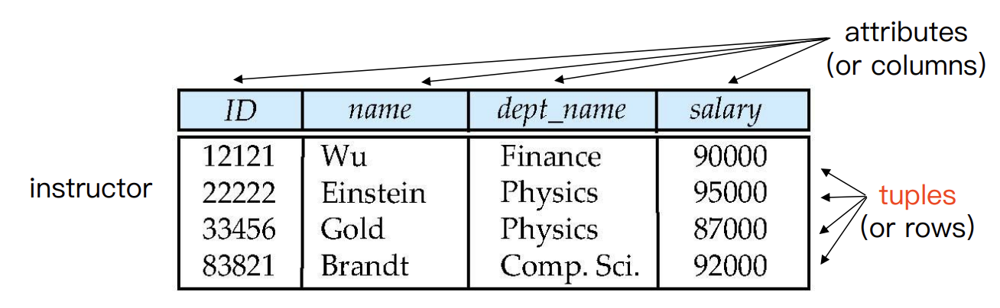
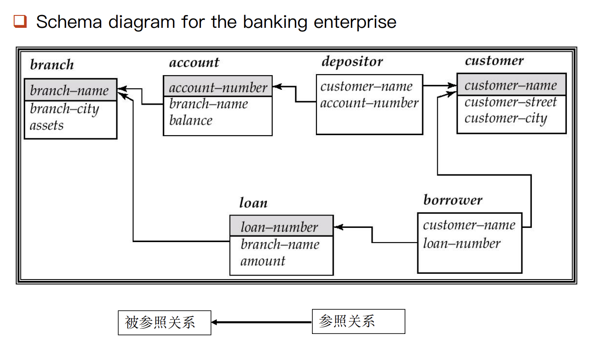
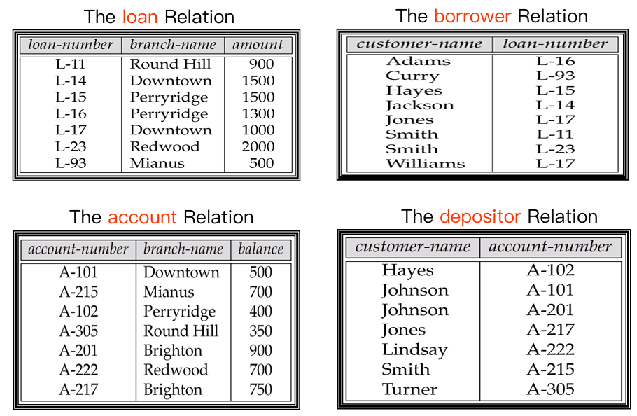
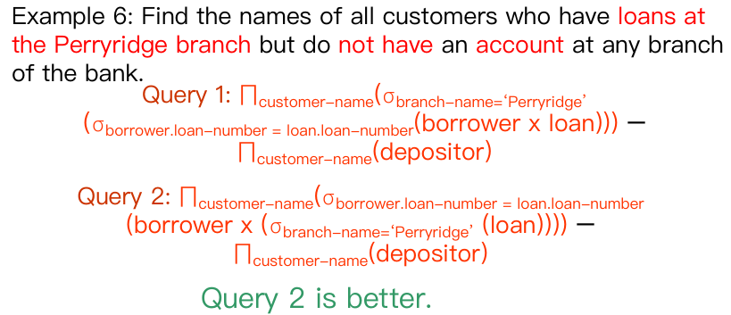
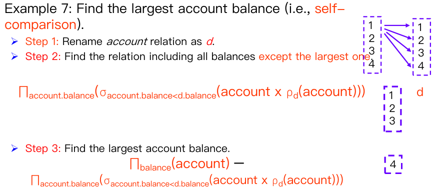
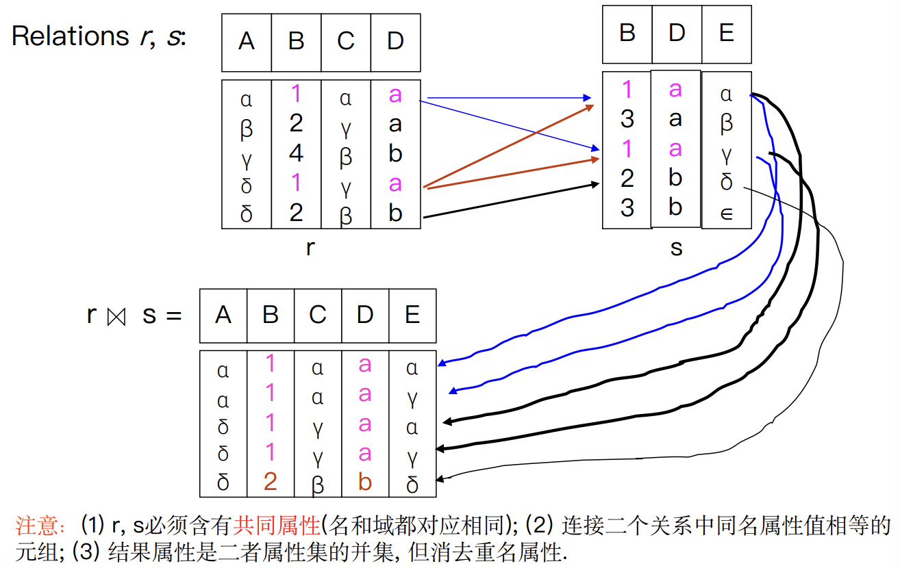
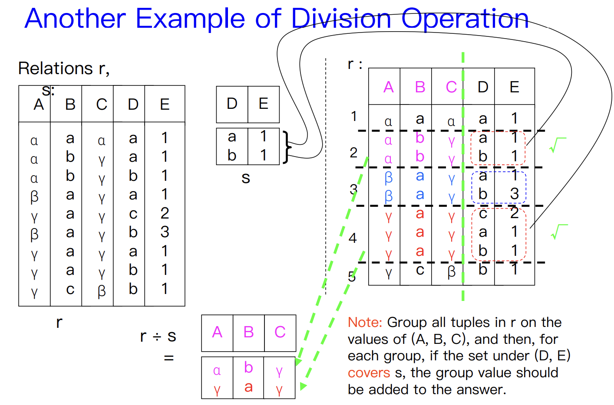
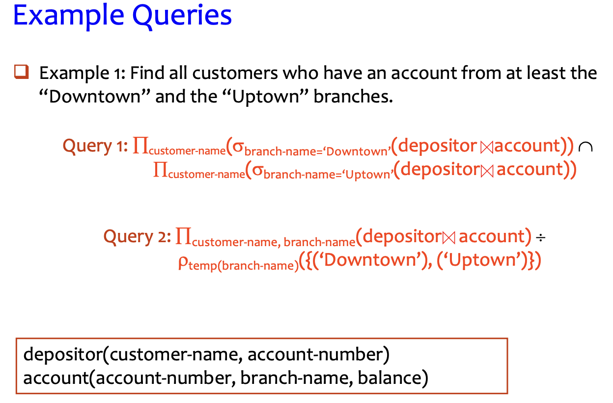
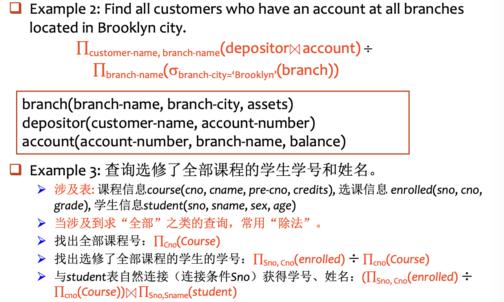

Relational Model¶
What is rational model
- The relational model is very simple and elegant.
- A relational database is a collection of one or more relations, which are based on the relational model.
- A relation is a table with rows and columns.
- The major advantages of the relational model are its straightforward data representation and the ease with which even complex queries can be expressed.
- Owing to the great language SQL, the most widely used language for creating, manipulating, and querying relational database.
Tip
- Relationship
- A relationship is an association among several entities.
- 指的是现实世界中多个实体集（entity sets） 之间的关联
- Relation
- A relation is the mathematical concept, referred to as a table.
- 是关系模型中的正式术语，指的就是看到的“表”
2.1 Structure of Relational Databases¶
1. Basic Structure¶
- Formally, given sets \(D_1,D_2,\dots,D_n(D_i=a_{ij}|_{i=1,\dots,k})\), a relation \(r\) is a subset of \(D_1 \times D_2 \times \dots \times D_n\) (a Cartesian product of a list of domain \(D_i\))
- Thus, a relation is a set of n-tuples \((a_{1j}, a_{2j}, \dots, a_{nj})\), where each \(a_{ij} \in D_i (i \in [1, n])\).
2. Attribute Types¶
- Each attribute of a relation has a name.
- The set of allowed values for each attribute is called the domain(域) of the attribute.
- Attribute values are (normally) required to be atomic 原子性, i.e., indivisible (1st NF, 关系理论第一范式)
- multivalued attribute多值属性 values are not atomic.
phones: ["123-4567", "987-6543"] - composite attribute复合属性 values are not atomic.
address: "Zhejiang, Hangzhou, Xihu District"
- multivalued attribute多值属性 values are not atomic.
- The special value null is a member of every domain.
- The null value causes complications in the definition of many operations.
- 暂时忽略 null 带来的影响，后续章节会专门讨论
3. Concepts about Relation¶
A relation is concerned with two concepts: relation schema and relation instance.
- The relation schema describes the structure of the relation.
Student-schema = (sid: string, name: string, sex: string, age: int, dept:string)
Student-schema = (sid, name, sex, age, dept) - The relation instance corresponds to the snapshot of the data in the relation at a given instant in time.
| 编程概念 | 对应数据库概念 | 说明 |
|---|---|---|
| Variable（变量） | Relation（关系） | 整体容器 |
| Variable type（类型） | Relation schema（模式） | 定义结构和数据类型 |
| Variable value（值） | Relation instance（实例） | 当前存储的实际数据 |
Relation Schema¶
- Assume \(A_1, A_2 , \dots, A_n\) are attributes
- Formally expressed: \(R = (A_1, A_2 , \dots, A_n )\) is a relation schema
- E.g.,
instructor = (ID, name, dept_name, salary)
- E.g.,
- \(r(R)\) is a relation on the relation schema \(R\)（具体实例）
- E.g.,
instructor(instructor-schema) = instructor(ID, name, dept_name, salary)
- E.g.,
Relation Instance¶
- The current values (i.e., relation instance) of a relation are specified by a table.
- An element \(t\) of \(r\) is a tuple, represented by a row in a table.
- Let a tuple variable \(t\) be a tuple, then
t[name]denotes the value of \(t\) on the name attribute.

The Properties of Relation¶
- The order of tuples is irrelevant (i.e., tuples may be stored in an arbitrary).
- No duplicated tuples in a relation.
- Attribute values are atomic.
4. Key¶
- Let \(K \subseteq R\)
- \(K\) is a superkey (超码) of \(R\) if values for \(K\) are sufficient to identify a unique tuple of each possible relation \(r(R)\)
- E.g., both {ID} and {ID, name} are superkeys of the relation instructor.
- \(K\) is a candidate key (候选码) if \(K\) is minimal superkey.
- E.g., {ID} is a candidate key for the relation instructor, since it is a superkey and no any subset.
- \(K\) is a primary key (主码), if \(K\) is a candidate key and is defined by user explicitly.
- Primary key is usually marked by underline
- Assume there exists relations \(r\) and \(s\): \(r(A, B, C)\), \(s(B, D)\), we can say that attribute \(B\) in relation \(r\) is foreign key (外码) referencing \(s\), and \(r\) is a referencing relation (参照关系), and \(s\) is a referenced relation (被参照关系).
Schema Diagram

2.2 Fundamental Relational-Algebra Operations¶
Six basic operations
- Select 选择
- Project 投影
- Union 并
- set difference 差（集合差）
- Cartesian product 笛卡儿积
- Rename 改名（重命名）
1. Select Operation¶
- Notation: \(\sigma_p (r)\), where \(p\) is called the selection predicate
- Defined as: \(\sigma_p (r) = \{t | t \in r \text{ and } p(t)\}\)
where \(p\) is a formula in propositional calculus consisting of terms connected by : \(\land\) (and), \(\lor\) (or), \(\lnot\) (not) - Each term is one of:
<attribute> op <attribute> or <constant>, where op is one of \(=,\ne,>,\geq,<,\leq\)
2. Project Operation¶
- Notation: \(\Pi_{A_1, A_2, \dots, A_k}(r)\)
where \(A_1, ... A_k\) are attribute names and \(r\) is a relation name. - The result is defined as the relation of \(k\) columns obtained by erasing the columns that are not listed.
- Duplicate rows removed from result, since relations are sets.
- E.g., To eliminate the branch-name attribute of account
3. Union Operation¶
- Notation: \(r \cup s\)
- Defined as: \(r \cup s = \{t \mid t \in r \text{ or } t \in s\}\)
- For \(r \cup s\) to be valid:
- \(r\) and \(s\) must have the same arity (i.e., the same number of attributes)
- The attribute domains must be compatible
- E.g., Find all customers with either an account or a loan
4. Set Difference Operation¶
- Notation: \(r – s\)
- Defined as: \(r – s = \{t | t \in r \text{ and } t \notin s\}\)
- Set differences must be taken between compatible relations.
- \(r\) and \(s\) must have the same arity（元数，即参数的数量）.
- Attribute domains of \(r\) and \(s\) must be compatible.
5. Cartesian-Product Operation¶
- Notation: \(r \times s\)
- Defined as: \(r \times s = \{\{t q\} | t \in r \text{ and } q \in s\}\)
- Assume that attributes of \(r(R)\) and \(s(S)\) are disjoint (i.e., \(R\cap S=\emptyset\)).
- If attributes of \(r(R)\) and \(s(S)\) are not disjoint, then renaming for attributes must be used.
6. Rename Operation¶
- Allows us to name, and therefore to refer to, the results of relational-algebra expressions. (procedural)
- Allows us to refer to a relation by more than one name.
- \(\rho_x(E)\) returns the expression \(E\) under the name \(X\)
- If a relational-algebra expression \(E\) has arity \(n\), then
- \(\rho_{x(A_1, A_2, \dots, A_n)}(E)\) （对 \(E\) 及其 attributes 都重命名）returns the result of expression \(E\)
Example Queries¶



2.3 Additional Relational-Algebra Operations¶
Four basic operators
- Set intersection 交
- Natural join 自然连接
- Division 除
- Assignment 赋值
Tip
We define additional operations that do not add any power to the relational algebra, but that simplify common queries.
Set-Intersection Operation¶
- Notation: \(r \cap s\)
- Defined as: \(r \cap s = \{t | t \in r \text{ and } t \in s\}\)
- Assume:
- \(r\) and \(s\) must have the same arity.
- Attribute domains of \(r\) and \(s\) must be compatible.
- Note: \(r \cap s = r - (r-s)\)
Natural Join Operation¶
- Notation: \(r \bowtie s\)
- Example: \(R = (A, B, C, D)\), \(S = (B, D, E)\)
- Result schema of the natural-join of \(r\) and \(s = (A, B, C, D, E)\)
- \(r \bowtie s = \Pi_{r.A,\ r.B,\ r.C,\ r.D,\ s.E}(\sigma_{r.B = s.B\ \land\ r.D = s.D}(r \times s))\)

- Let \(r\) and \(s\) be relations on schemas \(R\) and \(S\), respectively. Then,
\(r \bowtie s\) is a relation on schema \(R \cup S\) obtained as follows:- Consider each pair of tuples \(t_r\) from \(r\) and \(t_s\) from \(s\).
- If \(t_r\) and \(t_s\) have the same value on each of the attributes in \(R \cap S\), add a tuple \(t\) to the result, where
- \(t\) has the same value as \(t_r\) on \(r\).
- \(t\) has the same value as \(t_s\) on \(s\).
Theta Join Operation¶
- Notation: \(r \bowtie_{\theta} s\), where \(\theta\) is the predicate on attributes in the schema.
- Theta join: \(r \bowtie_{\theta} s =\bowtie_{\theta} (r \times s)\)
- Theta join is the extension to the Nature join.
Division Operation¶
- Notation: \(r \div s\)
- Let \(r\) and \(s\) be relations on schemas \(R\) and \(S\), respectively, where \(R = (A_1, \dots, A_m, B_1, \dots, B_n )\) and \(S = (B_1, \dots, B_n )\). Then, the result of \(r \div s\) is a relation on the schema \(R –S = (A_1, \dots, A_m)\) and \(r \div s = \{t|t \in |\Pi_{R-S}(r)\land \forall u\in s(tu\in r)\}\)

Division Operation Characteristic¶
- Property/Characteristic
- Let \(q = r \div s\), then \(q\) is the largest relation satisfying \(q \times s \subseteq r\).
- Definition in terms of the basic algebra operation:
Let \(r (R)\) and \(s (S)\) be relations, and let \(S \subseteq R\), then
双重否定的思想
- 构建理想全集：利用笛卡尔积，将所有学生与所有课程组合，生成一个每位学生都选了每门课的理想状态表
- 找出缺失记录：用这个理想全集减去真实的选课记录，剩下的就是本该选却没选的缺失记录。
- 定位不合格学生：从这些缺失记录中提取出学生ID，这就是没选全所有课的学生集合。
- 得出最终结果：最后，用所有学生减去上述不合格学生，剩下的就是选修了所有课程的学生。
Assignment Operation¶
The assignment operation (\(\leftarrow\)) provides a convenient way to express complex queries.
- Write query as a sequential program consisting of
- A series of assignments.
- Followed by an expression whose value is displayed as a result of thequery.
- Assignment must always be made to a temporary relation variable.
Example
- 找出所有可能的候选者
- **含义**：从关系 $r$ 中提取出所有在 $R$ 中但不在 $S$ 中的属性（即 $R-S$）
- **目的**：找出所有潜在的答案。例如，如果 $r$ 是“学生选课表”，$s$ 是“某专业所有课程”，那么 $temp1$ 就是学生名单
- 找出“不合格”的候选者
- **$temp1 \times s$**：将所有候选人与 $s$ 中的所有项进行组合，代表了“如果每个学生都选了所有课，应该产生的完整记录”
- **$\Pi_{R-S, S}(r)$**：$r$ 关系本身（包含了学生和他们实际选的课）
- **$(temp1 \times s) - \Pi_{R-S, S}(r)$**：哪些学生原本应该选哪门课，但实际上没选
- **$\Pi_{R-S}(\dots)$**：最后再投影到候选人属性上。这时得到的 $temp2$ 就是不合格的人
- 排除不合格者，得到结果
$$
result = temp1 - temp2
$$
More examples


2.4 Extended Relational-Algebra Operations¶
1. Generalized Projection¶
Extends the projection operation by allowing arithmetic functions to be used in the projection list.
where \(E\) is any relational-algebra expression, and each of \(F_1, F_2, \dots, F_n\) are arithmetic expressions involving constants and attributes in the schema of \(E\).
Example
关系：instructor(ID, name, dept, salary)
普通投影：只选列 \(\Pi_{\text{name, salary}}(\text{instructor})\)
广义投影：选列 + 算新值 \(\Pi_{\text{name, salary} \times 1.1}(\text{instructor})\)→ 输出 name 和涨薪 10%后的 salary
2. Aggregate Functions¶
- Aggregation function takes a collection of values and returns a single value as a result.
- avg: average value
- min: minimum value
- max: maximum value
- sum: sum of values
- count: number of values
- Aggregate operation in relational algebra
where $E$ is any relational-algebra expression,
$G_1, G_2, \dots, G_n$ is a list of <u>attributes</u> on which to group (can be empty),
each $F_i$ is an <u>aggregate function</u>,
and each $A_i$ is an <u>attribute name</u>.
- result of aggregation does not have a name
- Can use rename operation to give it a name
- For convenience, we permit renaming as part of aggregate operation
2.5 Modification of the Database¶
The content of the database may be modified using the following operations:
- Deletion
- Insertion
- Updating
All these operations are expressed using the assignment operator.
Deletion¶
- A delete request is expressed similarly to a query, except instead of displaying tuples to the user, the selected tuples are removed from the database.
- It can delete only whole tuples; cannot delete values on some particular attributes.
- A deletion is expressed in relational algebra by:
- where $r$ is a relation and $E$ is a relational algebra query.
Example
Delete all accounts at branches located in Needham.
Insertion¶
- To insert data into a relation, we either:
- Specify a tuple to be inserted.
- Write a query whose result is a set of tuples to be inserted.
- In relational algebra, an insertion is expressed by:
where $r$ is a relation and $E$ is a relational algebra expression.
- The insertion of a single tuple is expressed by letting \(E\) be a constant relation containing one tuple.
Example
E.g.1: Insert information in the database specifying that Smith has $1200 in account A-973 at the Perryridge branch.
E.g.2: Provide as a gift for all loan customers in the Perryridge branch, a $200 savings account. Let the loan number serve as the account number for the new savings account.
Update¶
- A mechanism to change a value in a tuple without charging all values in the tuple.
- Use the generalized projection operator to do this task
where each $F_i$ is either the ith attribute of $r$, if the ith attribute is not updated, **or**, if the attribute is to be updated Fi is an expression, involving only constants and the attributes of r, which gives the new value for the attribute.
Example
E.g.1: Make interest payments by increasing all balances by 5 percent.
E.g.2: Pay all accounts with balances over $10,000 6 percent interest and pay all others 5 percent.